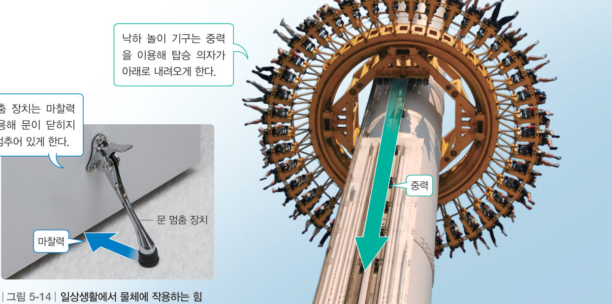
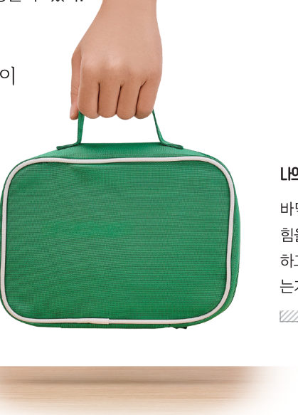
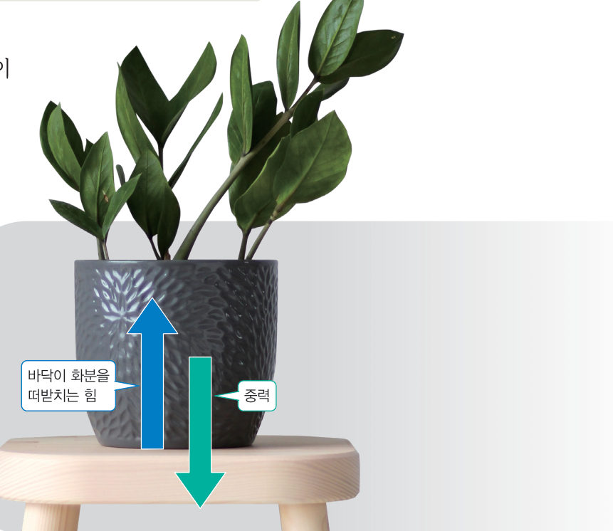
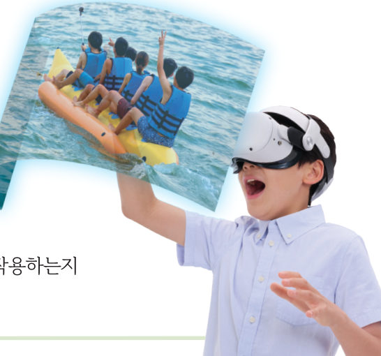
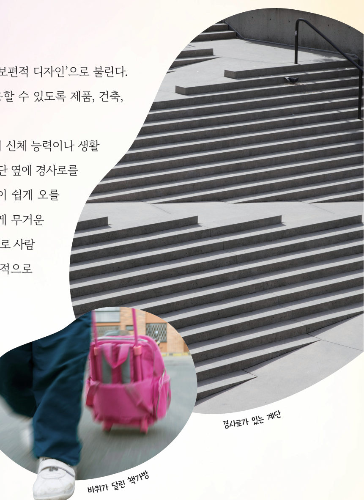

살아있는 교과서 · Ⅴ. 힘의 작용 · 3. 힘의 작용과 운동 상태 변화 · 02 182~185쪽
일상생활에서 찾는 힘의 작용
“너랑 다르게 기울이면 넘어져.” 우리 주변의 정지해 있는 물체와 움직이는 물체에는 어떤 힘이 작용할까? 가방, 열기구, 그리고 3D 바닷속 스쿠버 다이버의 부력 조절 장치로 힘의 평형과 운동 상태 변화를 찾아보자.
🎯 이 단원을 배우면 — 다양한 사례에서 작용하는 힘과 힘의 평형 관계를 설명할 수 있다.
교과서일상생활에서 물체에는 어떤 힘이 작용할까? 182쪽
우리 주변의 정지해 있는 물체나 운동하고 있는 물체에는 중력, 탄성력, 마찰력, 부력 등 여러 가지 힘이 작용한다. 예를 들어 그림 5-14와 같이 문에 설치된 문 멈춤 장치와 바닥 사이에는 마찰력이 작용한다. 이때 마찰력은 문을 닫히게 하는 힘과 평형을 이루어 문이 멈추어 있도록 한다. 또 낙하 놀이 기구에는 중력이 작용하여 탑승 의자가 점점 빨라지며 아래로 내려오도록 한다. 이와 같이 일상생활에서 경험하는 다양한 상황에서 여러 가지 힘이 물체에 작용하여 힘의 평형을 이루기도 하고, 물체의 운동 상태를 변하게 하기도 한다.

그림 5-14일상생활에서 물체에 작용하는 힘 — 문 멈춤 장치(마찰력), 낙하 놀이 기구(중력)
1문 멈춤 장치의 마찰력은 문을 닫히게 하는 힘과 . 낙하 놀이 기구에 작용하는 중력은 탑승 의자의 .
해 보기바닥에 놓인 물체에 작용하는 힘 설명하기 183쪽
바닥에 놓여 있는 물체에는 어떤 힘이 작용할까?
하늘에 떠서 정지해 있는 열기구에는 중력과 부력이 작용하고, 두 힘이 서로 평형을 이룬다. 바닥에 놓여 정지해 있는 물체에도 작용하는 힘이 서로 평형을 이룬다.

183쪽가방을 손으로 든다.
가방을 손으로 든 뒤 가방에 작용하는 중력과 평형을 이루는 힘이 무엇인지 이야기한다.
가방을 바닥에 내려놓고 가방에 작용하는 중력과 평형을 이루는 힘의 크기와 방향은 어떠한지 과정 1을 바탕으로 추론한다.
가상 실험가방에 작용하는 힘
상황을 골라 가방에 작용하는 힘의 화살표를 관찰하자. 가방의 무게를 바꿔도 두 힘의 관계가 그대로인지 확인해 보자.
1바닥에 놓인 가방에 작용하는 중력과 평형을 이루는 힘은 이고, 그 크기는 중력과 , 방향은 이다.

그림 5-15탁자 위 화분에 작용하는 힘의 평형
탁자 위에 놓인 화분에는 그림 5-15와 같이 중력이 작용하고 있지만 화분이 아래로 떨어지지 않는다. 이는 화분에 중력뿐만 아니라 탁자 바닥이 화분을 떠받치는 힘이 작용하고 있기 때문이다. 이때 바닥이 화분을 떠받치는 힘은 화분에 작용하는 중력과 크기가 같고, 방향이 반대이다. 이 두 힘이 서로 평형을 이루어 화분에 작용하는 알짜힘이 0이 된다.
탐구장난감이나 놀이 기구에서 힘의 작용 탐구하기 184쪽

184쪽가상 현실 놀이 기구 체험
자료 수집 다양한 장난감과 놀이 기구의 그림과 영상을 찾아보거나 가상 현실로 체험한다.
자료 분석 장난감이나 놀이 기구에 작용하는 힘의 종류와 힘의 평형 관계를 분석한다.
모둠별로 분석한 내용을 정리하여 발표한다.
가상 체험열기구 조종하기
버너의 불꽃을 조절해 열기구 속 공기를 데우거나 식혀 보자. 공기가 뜨거워질수록 열기구에 작용하는 부력이 커져요. 열기구를 원하는 높이에서 멈춰 세워 보자!
부력-
중력-
운동-
1하늘에 떠서 정지해 있는 열기구에서 부력과 중력의 크기는 이다.
2🧑🤝🧑 우리 모둠이 고른 장난감이나 놀이 기구에 작용하는 힘의 종류와 평형 관계를 분석해 보자.
3D 블록 실험실부력 조절 장치로 바닷속 오르내리기
다이버의 부력 조절 장치(BCD)에 공기를 넣거나 빼 보자. 공기를 넣으면 장치의 부피가 늘어나 부력이 커져요. 다이버를 수심 10 m에 멈춰 세워 볼까? 드래그하면 바닷속이 돌아가요.
수심 -
부력 (위)-
중력 (아래)-
알짜힘-
운동-
1부력 조절 장치에 공기를 넣어 부피가 늘어나면 이 커져 다이버가 . 다이버가 한 깊이에 멈추려면 부력과 중력이 한다.
스스로 확인하기182쪽 학습 목표를 달성했는지 확인해 보자 184쪽
1개념 확인 탁자 위에 놓인 물체에는 중력과 탁자 바닥이 물체를 떠받치는 힘이 서로 ( )을/를 이룬다.
2사고력 일정한 속력으로 올라가고 있는 승강기에 탄 사람에게 작용하는 힘을 생각해 보고, 각 힘의 크기와 방향을 비교하여 설명해 보자.
🧩 세 번째 블록 · 힌트 조각 1 (184쪽)
물속에서 부력 조절 장치에 공기를 가득 넣어 부피가 늘어나면 부력 조절 장치에 작용하는 ( )이 ( )보다 커진다.
과학이 톡모두를 위한 새로운 접근, 유니버설 디자인 185쪽

185쪽경사로가 있는 계단 · 바퀴가 달린 책가방
유니버설 디자인은 흔히 ‘모든 사람을 위한 디자인’, ‘보편적 디자인’으로 불린다. 또 나이, 성별, 장애 등에 관계없이 누구나 편하게 이용할 수 있도록 제품, 건축, 환경 등을 계획하고 설계하는 것을 일컫는다.
유니버설 디자인이 적용된 제품이나 건축물은 개인의 신체 능력이나 생활 환경에 상관없이 누구나 쉽게 이용할 수 있어야 한다. 계단 옆에 경사로를 설치하면 휠체어를 탄 사람이나 다리 힘이 약한 사람이 쉽게 오를 수 있다. 또 가방에 바퀴를 달면 힘이 약한 사람도 쉽게 무거운 짐을 가지고 다닐 수 있다.
1🧑🤝🧑 창의성 쑥! 제품 디자이너의 인터뷰 영상이나 관련 자료를 찾아보고, 제품 디자이너를 소개하는 글을 써 보자.
5분 테스트일상생활에서 찾는 힘의 작용
1문 멈춤 장치와 바닥 사이에는 이 작용한다. 탁자 위 화분에는 탁자가 화분을 떠받치는 힘과 이 작용한다. 호수 위에 떠서 정지해 있는 백조에 작용하는 두 힘의 크기는 중력 부력이다.
2알짜힘이 0인 상황은 O, 0이 아닌 상황은 X를 골라 보자. ⑤ 하늘 위로 올라가는 풍선 ⑥ 하늘에 떠 있는 열기구 ⑦ 호수 밑바닥으로 가라앉고 있는 돌멩이 ⑧ 수영장에서 수영하고 있는 어린이
스스로 정리하기일상생활에서 찾을 수 있는 힘의 작용 188쪽
2일상생활에서 찾을 수 있는 힘의 작용
(1) 일상생활에서 여러 가지 힘이 물체에 작용하여 힘이 평형을 이루기도 하고, 물체의 운동 상태를 변하게 하기도 한다. (2) 바닥에 놓인 물체에는 중력과 바닥이 물체를 떠받치는 힘이 서로 을/를 이룬다. 바닥이 물체를 떠받치는 힘은 중력과 크기가 같고, 방향은 서로 방향이다.
제출학생 정보 · 제출하기
모든 활동을 마친 뒤 제출하면 전체가 한 번에 채점되고 피드백이 나타나요. 답안은 선생님 스프레드시트(중1 탭)에 기록돼요.